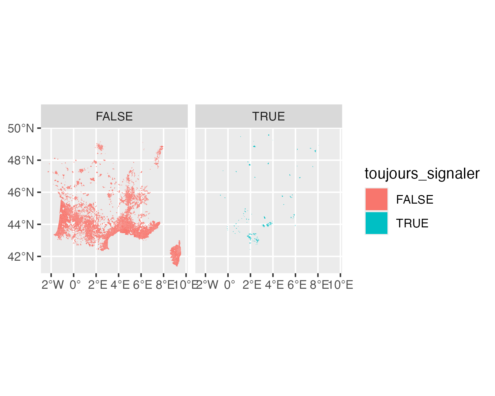

The goal of alboFr is to retrieve the latest online data from https://signalement-moustique.anses.fr/signalement_albopictus/colonisees and convert them into an sf object.
Installation
You can install the development version of alboFr from GitHub with:
# install.packages("pak")
pak::pak("e-kotov/alboFr")Example
The package only has one function to get the data:
library(alboFr)
x <- get_tiger_mosquito_colonisation_in_france()
head(x)Simple feature collection with 6 features and 1 field
Geometry type: POLYGON
Dimension: XY
Bounding box: xmin: 1.195249 ymin: 42.99451 xmax: 7.835923 ymax: 48.64427
Geodetic CRS: WGS 84
toujours_signaler geometry
1 TRUE POLYGON ((7.77076 48.49202,...
2 TRUE POLYGON ((1.987127 42.99451...
3 TRUE POLYGON ((1.584032 44.76673...
4 TRUE POLYGON ((1.249545 44.34751...
5 TRUE POLYGON ((2.566791 43.02245...
6 TRUE POLYGON ((3.502814 43.97531...The data can then be plotted:
library(ggplot2)
p <- ggplot(x) +
geom_sf(aes(fill = toujours_signaler), col = NA) +
facet_wrap(~toujours_signaler)
p
ggsave(
filename = "man/figures/map.png",
plot = p,
width = 5,
height = 4,
units = "in",
dpi = 300
)
Finally the data can be saved to a GeoPackage file:
Citation
To cite package ‘alboFr’ in publications use:
Kotov E (2025). alboFr: Get French Data on Tiger Mosquito Colonisation. https://github.com/e-kotov/alboFr.
BibTeX: